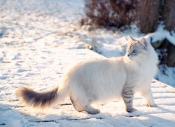

Gallery
Here are some images of each type of cat that I love.
Image source: Alex Meier from Unsplash
Siamese Cat
Siamese love to receive lots of cuddles and hang around their friends. Although sometimes they prefer spending time alone in the same room.
Image source: Alexander Kagan from Unsplash
Ragdoll Cat
Ragdolls are known to be similar to dogs with their devotion to their friends. They are also perfect as a companion as they are known to be gentle, sociable and calm.
Image source: Ani Adigyozalyan from Unsplash
British Shorthair Cat
British Shorthairs are completely dependent when they want to be, but they are also active and affectionate with their friends. Throughout the day, they would come and check in on them.
Image source: Boudhayan Bardhan from Unsplash
Mainecoon Cat
Mainecoons loves to play around and is bright, affectionate and extroverted. They are always affectionate and sweet natured as well.
Image source: Paul Hanaoka from Unsplash
Bengal Cat
Bengals are people-oriented and extremely active, however it takes time for them to feel comfortable around others as they don't trust people before getting to know them.

Image source: Piotr Musioł from Unsplash
Siberian Cat
Siberians enjoy the other company of cats, dogs and other animals. They also love playing with children so long as the children are gentle with them. They can adapt to any kind of family.